Code
# Basic structure
ggplot(data = my_data)Introduction, Foundations & Basic Geoms
2026-05-13
Core Philosophy: Build complex visualizations by combining simple, well-defined layers
vs Base R: More intuitive, consistent, and powerful for complex visualizations
Plus: Themes for overall visual styling
The foundation of every ggplot2 visualization
Mapping data variables to visual properties
Visual representations of data
geom_point() - Scatter plotsgeom_line() - Line graphsgeom_bar() / geom_col() - Bar chartsgeom_histogram() - Histogramsgeom_boxplot() - Box plotsgeom_violin() - Violin plotsgeom_smooth() - Smoothed conditional meansKey concept: Geoms are added as layers with +
Data transformations and summaries
stat_identity - Use data as-isstat_count - Count observationsstat_bin - Bin data into groupsstat_smooth - Add smoothed linestat_summary - Compute summary statisticsUsually implicit: Most geoms automatically apply appropriate statistics
Defining the plotting space
coord_cartesian() - Default Cartesian coordinatescoord_flip() - Flip x and y axescoord_polar() - Polar coordinatescoord_fixed() - Fixed aspect ratiocoord_trans() - Transformed coordinatesCreating subplots for data subsets
facet_wrap() - Wrap panels by one variablefacet_grid() - Grid of panels by two variablesMapping data values to aesthetic properties
scale_x_continuous() - Continuous x-axisscale_color_manual() - Manual color specificationscale_fill_brewer() - ColorBrewer palettesscale_y_log10() - Logarithmic transformationHelping readers interpret the plot
guides() functionThe power of layering
Each layer builds on the previous, creating complex visualizations from simple components
Rows: 200
Columns: 22
$ PatientID <dbl> 1, 2, 3, 4, 5, 6, 7, 8, 9, 10, 11, 12, 13, 14, 15, 16, …
$ TreatmentGroup <chr> "Control", "Control", "Control", "Intervention", "Inter…
$ Age <dbl> 36, 79, 19, 70, 61, 43, 49, 23, 49, 72, 21, 72, 28, 73,…
$ Gender <chr> "Female", "Male", "Male", "Female", "Male", "Male", "Ma…
$ Region <chr> "South", "South", "West", "West", "West", "North", "Eas…
$ SmokingStatus <chr> "Non-smoker", "Former smoker", "Former smoker", "Curren…
$ AlcoholUse <chr> "No", "No", "No", "No", "No", "No", "Yes", "Yes", "No",…
$ BMI <dbl> 26.9, 24.4, 23.9, 31.0, 26.2, 27.2, 27.7, 25.7, 27.6, 2…
$ ExerciseFreq <chr> "1-2 times/week", "3-5 times/week", "Daily", "Daily", "…
$ ChronicDisease <chr> "None", "Diabetes", "None", "Diabetes", "None", "Hypert…
$ Vaccinated <chr> "Yes", "Yes", "No", "No", "Yes", "Yes", "No", "Yes", "N…
$ Cholesterol <dbl> 211, 156, 241, 163, 235, 282, 279, 211, 298, 228, 298, …
$ BloodSugar <dbl> 89, 93, 106, 123, 172, 107, 73, 126, 89, 86, 188, 140, …
$ Latitude <dbl> 36.522123, 12.080634, 13.858454, 13.342520, 33.925702, …
$ Longitude <dbl> 78.01147, 82.71495, 93.35245, 82.31285, 88.36550, 96.79…
$ BaselineDate <dttm> 2025-05-03 13:06:39, 2025-04-15 10:45:27, 2025-06-14 0…
$ SysBP_0m <dbl> 122, 128, 158, 115, 157, 121, 146, 126, 132, 135, 138, …
$ DiaBP_0m <dbl> 94, 95, 94, 79, 96, 82, 88, 80, 82, 90, 77, 77, 73, 84,…
$ SysBP_3m <dbl> 123, 127, 156, 110, 149, 114, 143, 119, 125, 136, 138, …
$ SysBP_6m <dbl> 120, 131, 154, 108, 146, 113, 148, 117, 122, 133, 139, …
$ DiaBP_3m <dbl> 97, 98, 94, 74, 91, 81, 87, 76, 79, 91, 75, 74, 69, 81,…
$ DiaBP_6m <dbl> 96, 98, 90, 75, 92, 75, 84, 74, 75, 86, 79, 73, 65, 80,…# Create derived variables
bp_data <- bp_data %>%
mutate(
# BP change from baseline to 6 months
SysBP_Change = SysBP_6m - SysBP_0m,
DiaBP_Change = DiaBP_6m - DiaBP_0m,
# Age groups
AgeGroup = cut(Age,
breaks = c(0, 30, 50, 65, 100),
labels = c("18-30", "31-50", "51-65", "65+")),
# Hypertension status (Systolic ≥140 or Diastolic ≥90)
Hypertension_Baseline = ifelse(SysBP_0m >= 140 | DiaBP_0m >= 90,
"Hypertensive", "Normal"),
# BMI categories
BMI_Category = cut(BMI,
breaks = c(0, 18.5, 25, 30, 100),
labels = c("Underweight", "Normal", "Overweight", "Obese"))
)# A tibble: 1 × 2
ExerciseFreq ChronicDisease
<int> <int>
1 2 2Key variables with missing data: ExerciseFreq (44), ChronicDisease (75)
# Strategy 1: Filter complete cases for specific analysis
bp_complete <- bp_data %>%
filter(!is.na(ExerciseFreq), !is.na(ChronicDisease))
# Strategy 2: Use na.rm in calculations
bp_data %>%
group_by(TreatmentGroup) %>%
summarise(Mean_SysBP = mean(SysBP_0m, na.rm = TRUE))
# Strategy 3: Explicitly show missing as category
bp_data %>%
mutate(ExerciseFreq = replace_na(ExerciseFreq, "Unknown"))Minimum Arguments: aes(x, y)
Use for: Showing relationships between two continuous variables
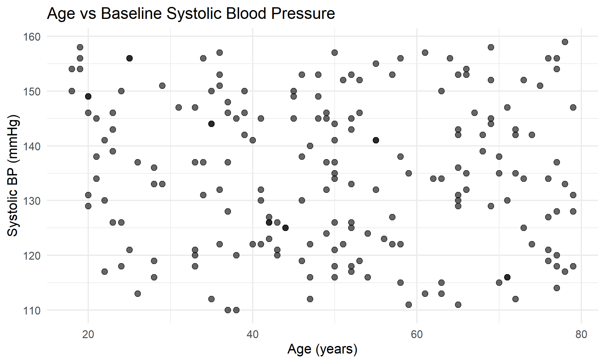
Adding aesthetics: Color by treatment group for comparison
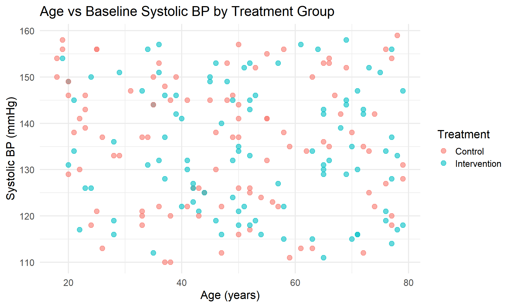
Minimum Arguments: aes(x, y)
Use for: Showing trends over time or ordered categories
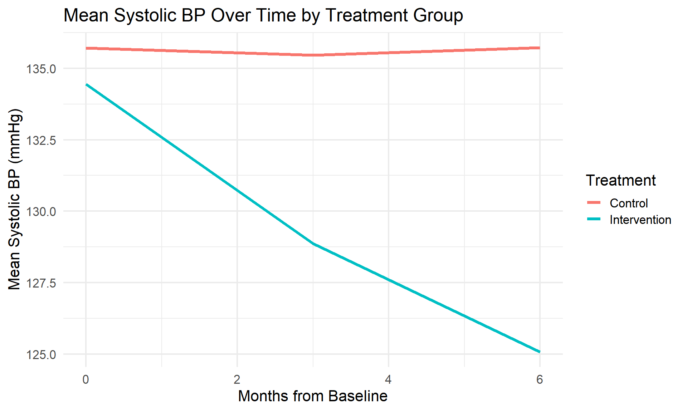
Minimum Arguments: aes(x, y)
Use for: Comparing values across categories (uses actual values)
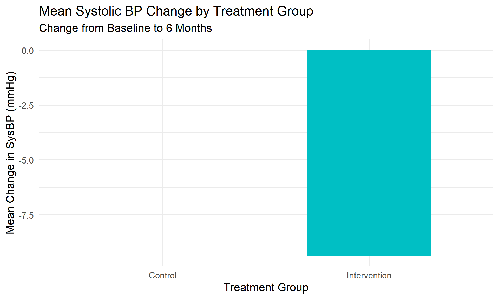
Minimum Arguments: aes(x)
Use for: Showing frequency counts of categorical variables
Note: geom_bar() counts observations, geom_col() uses y values directly
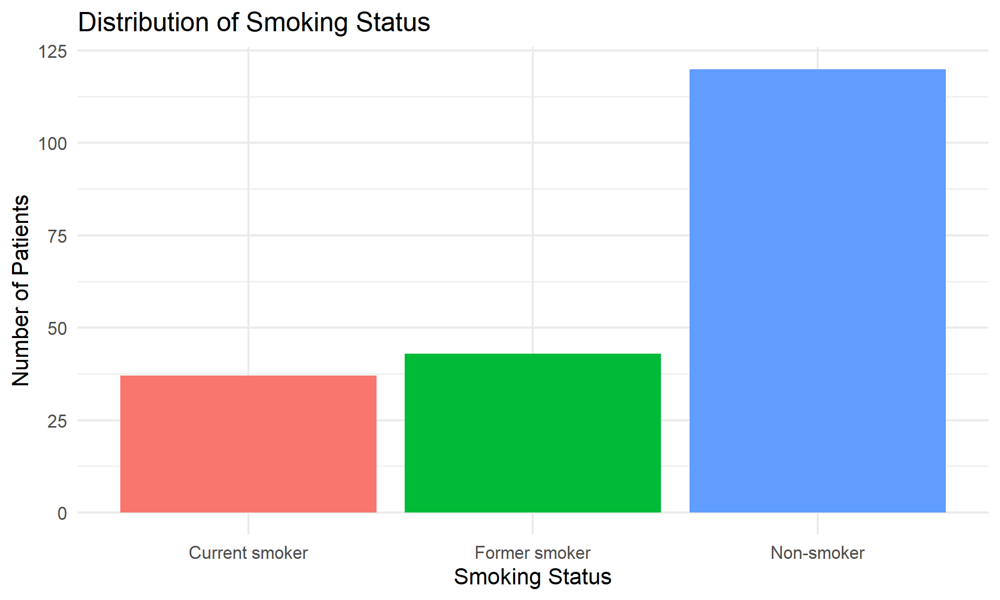
Minimum Arguments: aes(x)
Use for: Visualizing the distribution of a continuous variable
Key parameter: bins controls number of bars (default = 30) k = 1+_2(n) - k = number of bins - n = number of observations in your dataset - log _2 = logarithm base 2
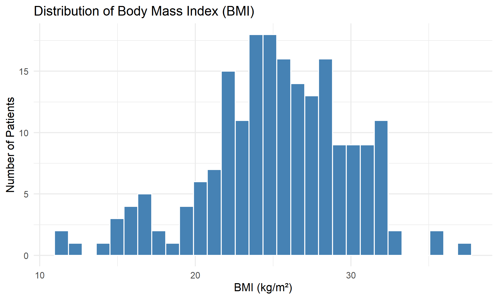
Minimum Arguments: aes(x, y) or aes(y)
Use for: Comparing distributions across groups, identifying outliers
Shows: Median, quartiles (IQR), and outliers
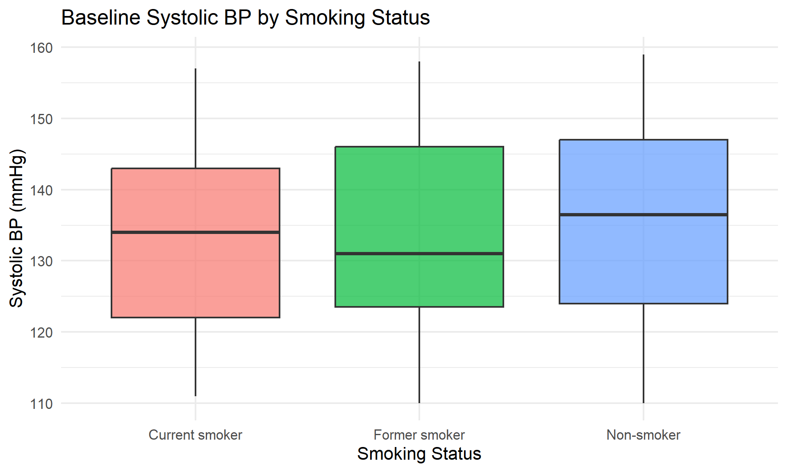
Minimum Arguments: aes(x, y)
Use for: Showing full distribution shape (density) across groups
Advantage: Shows distribution shape better than boxplots
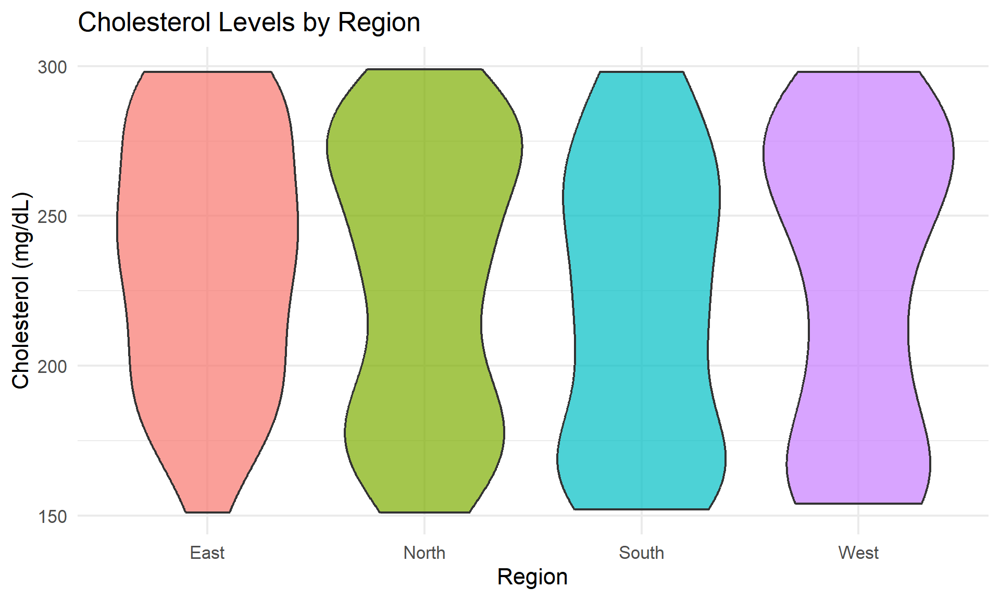
Minimum Arguments: aes(x, y)
Use for: Adding trend lines and confidence intervals
Methods: “loess” (smooth), “lm” (linear), “glm”, “gam”
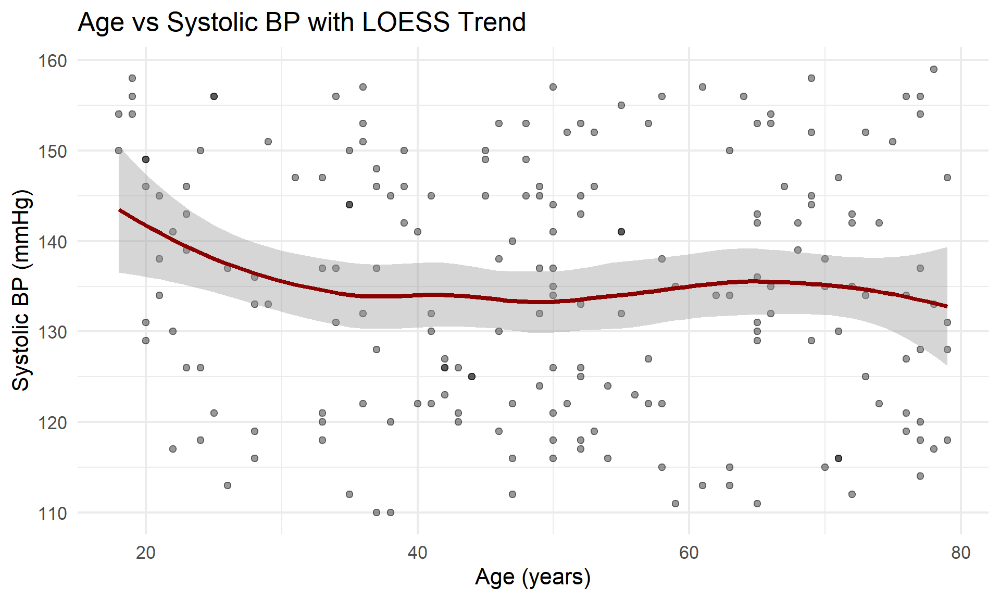
Minimum Arguments: aes(x)
Use for: Smooth density estimates of distributions
Advantage: Better for overlapping distributions than histograms
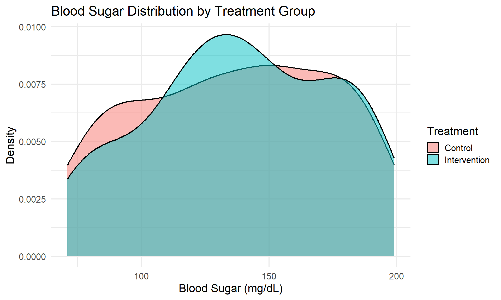
Minimum Arguments: aes(x, y)
Use for: Scatter plots with categorical x-axis where points overlap
Key parameters: width controls horizontal jitter, height for vertical
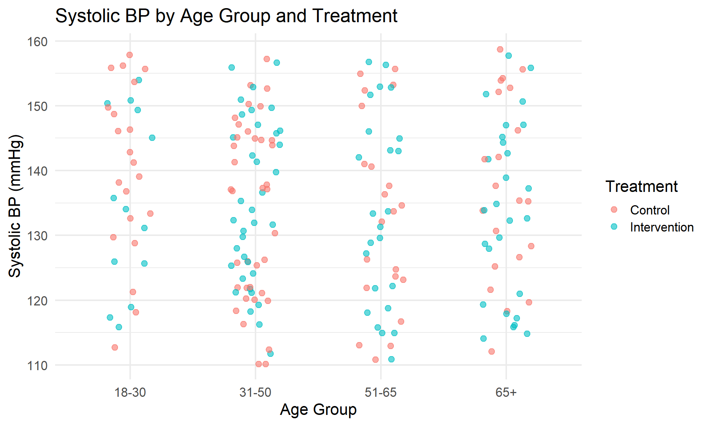
What we covered
Next in Module 2
Using the BP dataset, create a plot that:
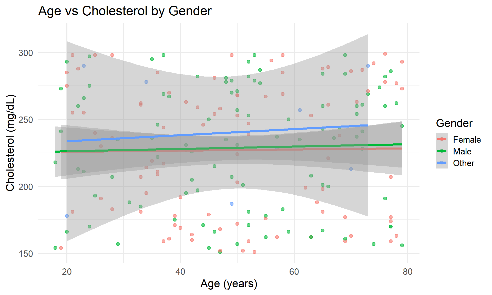
End of Module 1
Continue to Module 2: Aesthetics, Faceting & Themes